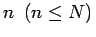

Inhalt Index DeskTop Bronstein

 Wahrscheinlichkeitsrechnung und Mathematische Statistik Mathematische Statistik Stichprobenfunktionen Grundgesamtheit, Stichproben, Zufallsvektor
Wahrscheinlichkeitsrechnung und Mathematische Statistik Mathematische Statistik Stichprobenfunktionen Grundgesamtheit, Stichproben, Zufallsvektor


Um nicht die gesamte Grundgesamtheit auf die betreffenden Merkmale hin untersuchen zu müssen, entnimmt man ihr eine Teilmenge, eine sogenannte Stichprobe, vom Umfang . Erfolgt die Auswahl zufallsgemäß, d.h., jedes Element der Grundgesamtheit muß die gleiche Chance haben, ausgewählt zu werden, dann spricht man von einer zufälligen Stichprobe. Die zufällige Auswahl kann durch Mischen oder blindes Ziehen bzw. durch Festlegung der auszuwählenden Elemente mit Hilfe von Zufallszahlen erfolgen.